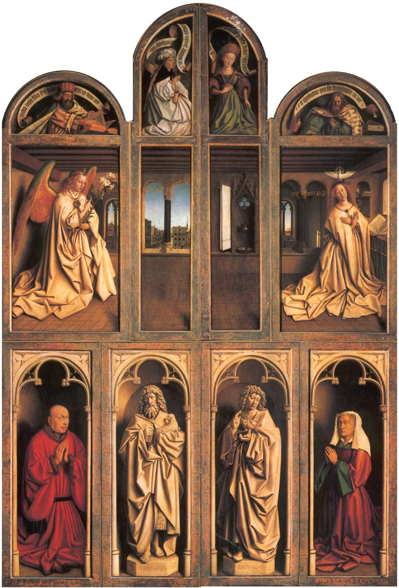
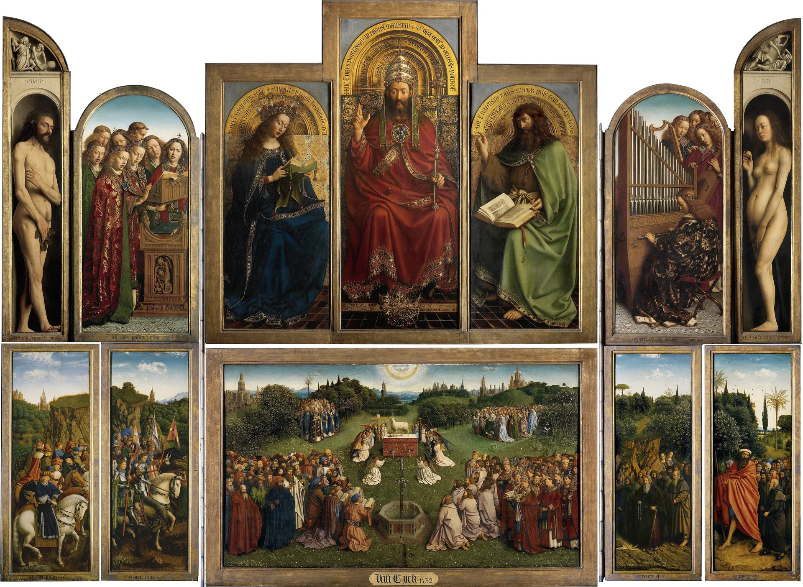
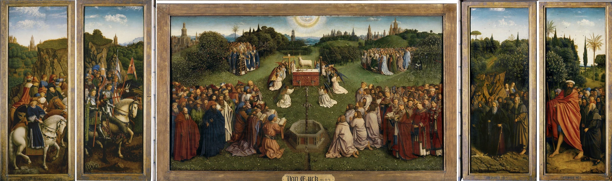
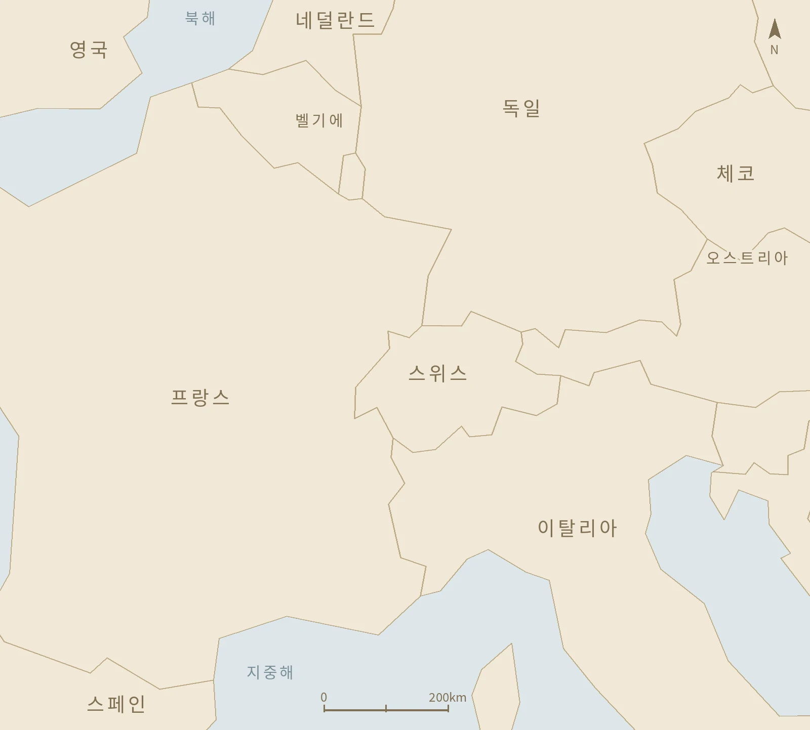
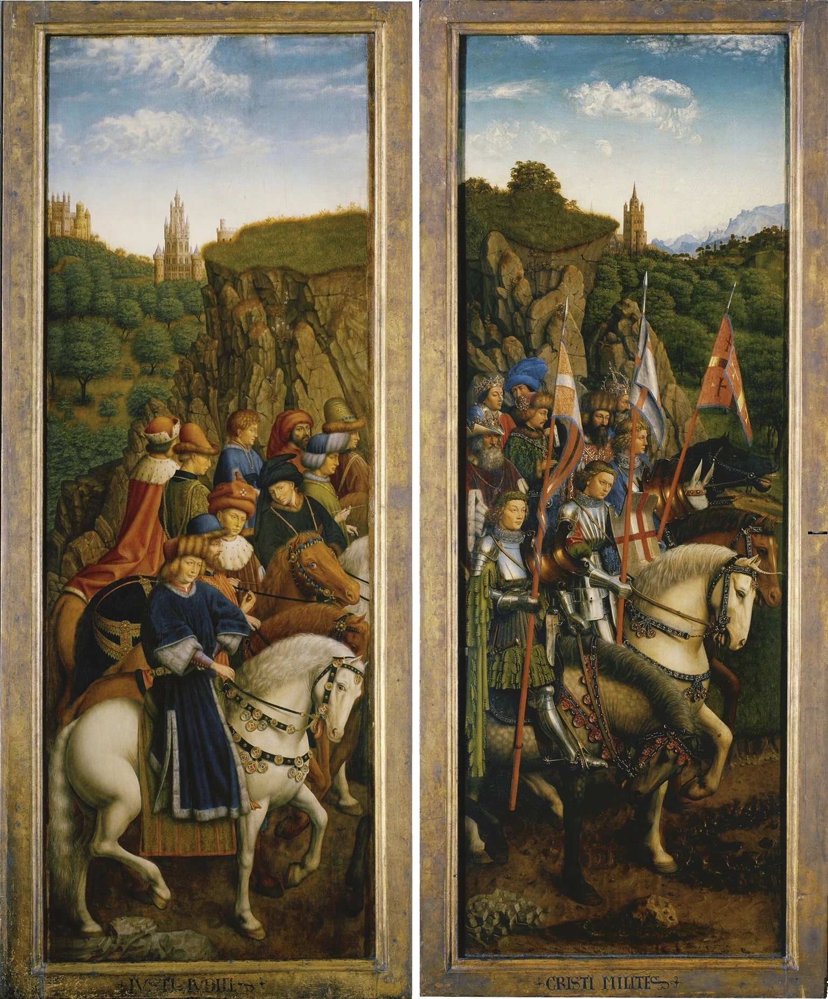
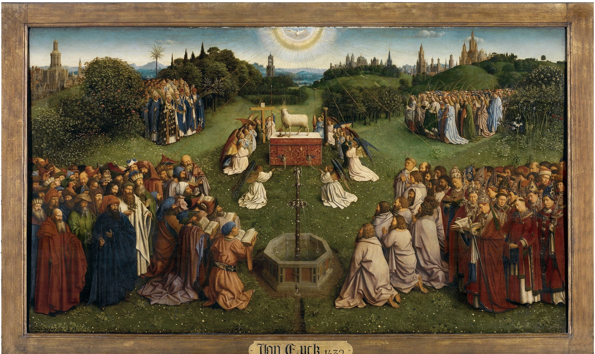

아직 펼치지 않은 카드
가장 긴 한 주 · 5헨트 제단화수많은 사람들이 모여 바라보는 가운데의 어린양은 누구일까요?가운데 하얀 양을 모두가 보고 있어. 어떤 양일까?
1432년 · 1940~1945년벨기에 헨트 성 바보 대성당 · 프랑스·독일·오스트리아를 거쳐
헨트 제단화
1432년 헨트의 교회(지금의 성 바보 대성당)에 놓인 제단화가 2차 세계 대전 때 먼 길을 떠났어요. 프랑스 남쪽의 박물관, 독일의 성, 오스트리아 산속 소금 광산까지 갔다가 1945년에 돌아왔어요. 지도 위에서 그 길을 한 구간씩 따라가 보세요.
아주 큰 그림이 전쟁 때 멀리멀리 떠났대. 어두운 소금 광산까지 갔다가 다시 집으로 돌아왔어. 지도에서 같이 따라가 볼까?
검수 전 시안이에요(기준서 1판). 장면에는 기관과 연구 논문, 기록 보관소 글에 있는 것만 옮겼고, 자료마다 날짜가 다른 곳은 그렇다고 밝혔어요. 길잡이 지도는 이 안내서가 그렸어요. 상상은 ‘눈 감고 상상해 보기’에만 썼어요.
시안 확인용카드 단계 미리 보기
1
평일과 축일
1432년 5월 6일, 헨트의 성 요한 교회(지금의 성 바보 대성당)에 이 제단화가 놓였어요. 그림을 주문한 사람은 요스 페이트(Joos Vijd)와 아내 리스베트 보를뤼트(Lysbette Borluut)예요.
평일에는 날개를 닫아 두었어요. 닫힌 바깥쪽 위에는 천사가 마리아에게 기쁜 소식을 전하는 장면이, 아래에는 무릎 꿇은 두 주문자와 돌 조각처럼 그린 세례 요한과 사도 요한이 있어요.


일요일과 축일(교회가 기념하는 날)에만 날개를 활짝 열었어요. 안쪽은 바깥보다 더 화려한 축제의 색으로 칠했어요. 날개를 열면 너비가 두 배가 돼요.
평소엔 문을 닫아 두고, 일요일과 축제 날에만 활짝 열었대.
물어보기닫힌 문 안에는 무엇이 있을까?
2
어린양에게 모여드는 사람들
활짝 열면 아래 다섯 칸이 초록 들판 하나로 이어져요. 한가운데 제단 위에 어린양이 서 있어요. 세례 요한은 예수를 가리켜, 세상의 죄를 짊어지고 가는 하나님의 어린양이라고 말했어요(요한복음 1장 29절). 그래서 그리스도인들은 이 어린양을 예수로 읽어요.
샘 왼쪽 앞에는 성경을 펼친 구약의 증인들이, 오른쪽 앞에는 무릎 꿇은 열두 사도가 있어요. 그 뒤 들판 가운데쯤에는 남자 성인들과 여자 성인들이 숲 사이로 다가와요.

양쪽 날개에서도 사람들이 와요. 왼쪽은 말을 탄 ‘의로운 재판관들’과 ‘그리스도의 기사들’, 오른쪽은 걸어서 오는 ‘거룩한 은수자들’(홀로 숨어 기도하며 산 수도자들)과 ‘거룩한 순례자들’이에요.
순례자들 맨 앞에 붉은 망토를 두른 커다란 사람은 크리스토포로스예요. 여행하는 사람을 지켜 주는 성인으로 알려져 있어요. 그림 속 길은 모두 한가운데 어린양에게로 모여요.
그림 속 사람들은 사방에서 어린양에게 모여요. 나라면 어느 무리와 함께 걸어갈까요?
사람들이 사방에서 어린양에게 모여들고 있어. 말 타고 오는 사람도 있어!
물어보기너라면 어느 무리랑 같이 걸어갈래?
3
떠났다 돌아온 길
1940년 5월, 독일군이 벨기에로 쳐들어왔어요. 그때부터 제단화는 다섯 해 동안 먼 길을 떠돌았어요.
네 곳을 따라가다 보면 가장 깊고 어두운 곳에 닿아요. 오스트리아 산속의 소금 광산이에요.
‘다음 곳으로’를 눌러 제단화가 간 길을 따라가 보세요.

헨트포노이슈반슈타인광산1940~1945년 제단화가 옮겨 간 곳 · 나라 경계는 지금 모습이에요 · 이 안내서가 그린 길잡이 지도 · 자연 지구(Natural Earth)의 퍼블릭 도메인 나라 경계 자료를 바탕으로
광산에서 꺼낸 제단화는 뮌헨을 거쳐 8월에 비행기로 벨기에에 돌아왔어요. 10월 30일, 헨트 성 바보 대성당에서 제단화가 돌아온 것을 기념하는 예배가 열렸어요. 떠난 지 다섯 해 만이었어요.
그림이 멀리멀리 떠났대. 지도에서 같이 따라가 보자!
물어보기어두운 광산에서 그림을 다시 만난 사람은 어떤 마음이었을까?
4
돌아오지 못한 한 칸
지금 제단화에서 한 칸은 진짜가 아니에요. 왼쪽 아래 「의로운 재판관들」은 1934년 4월 10일 밤에 도둑맞았어요. 도둑은 100만 벨기에 프랑을 요구했지만, 주교는 돈을 내지 않았어요.
그 자리에는 1945년에 화가 예프 반데르베컨(Jef Van der Veken)이 그린 모사본(똑같이 따라 그린 그림)이 있어요. 오른쪽 「그리스도의 기사들」은 반 에이크 형제가 그린 진품이에요. 진짜 「의로운 재판관들」은 아직도 찾지 못했어요.

“고요하고 아름답게, 제단화는 그저 거기 있었다.”
링컨 커스틴 — 1945년 5월, 포지와 함께 알타우제 광산에 들어가 제단화를 찾은 미군 일병이 나중에 적은 글 · 이 안내서가 옮김
도둑맞은 그림 한 칸은 아직도 못 찾았대. 그 자리엔 똑같이 그린 그림이 있어.
물어보기잃어버린 그림을 찾으면 맨 먼저 어디로 가져가야 할까?
눈 감고 상상해 보기
산속 광산 굴은 차갑고 축축해요. 등불 하나가 소금 벽을 비추며 천천히 안으로 들어가요. 발소리가 굴 안에 울려요. 나무 상자들이 줄지어 있는 곳에서 누군가 걸음을 멈추고, 등불을 높이 들어 올려요.
눈을 감아 봐. 깜깜한 동굴이야. 등불 하나가 반짝. 나무 상자 안에 무엇이 있을까?
나의 자리
등불 아래 ‘그저 거기’ 있던 제단화 앞에 섰다면, 나는 맨 먼저 무슨 말을 했을까요?
깜깜한 광산에서 잃어버렸던 그림을 다시 만나면, 그림에게 뭐라고 말해 줄래?
마음에 닿는 한 줄을 고르거나 직접 써 보세요. 한 줄을 남기면 이 자리의 도장이 찍혀요. 이 기기에만 저장돼요.
더 깊이
궁금한 칸만 펼쳐 읽어도 괜찮아요.
알고 보면
열면 두 배 날개를 닫으면 높이 3.75m, 너비 2.6m예요. 활짝 열면 너비가 5.2m가 돼요. 가운데 아래 「어린양 경배」 한 칸만 해도 너비가 2.37m예요.
앞선 길들 성상 파괴 운동(교회 안의 그림과 조각을 부순 일) 때는 다락과 시청에 숨겼어요. 프랑스 혁명 뒤에는 파리 루브르로 실려 갔다가 1815년에 돌아왔어요. 1816년에는 날개들이 팔려 결국 베를린 박물관으로 갔다가, 1차 세계 대전 뒤 1920년에야 돌아왔어요.
첫 번째 ‘상징적 반환’ 1945년 9월 3일 브뤼셀 왕궁에서, 미국 대사가 그림 앞에서 벨기에의 섭정(왕 대신 나라를 다스리던) 샤를 왕자에게 제단화를 돌려주었어요. 독일에 점령당했던 나라들에 ‘상징적 반환’으로 돌려준 첫 작품이었어요.
광산 뒤의 치료 광산에서 상한 그림은 1950~51년 브뤼셀 왕립 미술관에서 파울 코레만스(Paul Coremans)의 지휘로 다시 손봤어요.
기록마다 다른 점
광산에 들어간 날 미군 장교 포지(Posey)와 일병 커스틴(Kirstein)이 알타우제에 닿은 날을 한 자료는 5월 12일(들어간 날은 13일), 다른 자료는 5월 16일로 적어요.
노이슈반슈타인으로 간 날 포에서 가져간 날을 8월 3일로 적은 자료도, 성에 닿은 날을 8월 8일로 적은 자료도 있어요.
복원 전과 뒤 이 카드의 사진들은 복원 전 모습이에요. 2020년 복원으로 어린양의 얼굴이 달라졌어요. 덧칠을 걷어 내자 사람처럼 앞을 바라보는 원래 얼굴이 드러났어요.
그림과 함께 읽는 말씀

그리스도인들은 이 어린양을 세상의 죄를 짊어지고 가는 예수로 읽어요. 그림 속 글귀가 가리키는 말씀은 뜻만 옮기고, 본문은 대한성서공회 개역개정으로 이어 드려요.
요한복음 1장 29절 세례 요한이 자기에게 오는 예수를 보고, 세상 죄를 짊어지고 가는 하나님의 어린양이라고 말해요. 그림 속 제단 앞면에 이 말이 라틴어로 적혀 있어요.
요한계시록 22장 1절 하나님과 어린양의 보좌에서 생명수의 강이 흘러나와요. 그림 속 샘 가장자리에는 ‘이것은 생명수의 샘이다’라는 라틴어 글이 있어요.
직접 가 보기
확인한 날 · 2026년 11월 18일 · 바뀌기 쉬운 정보라 정기적으로 다시 확인해요
벨기에 헨트 성 바보 대성당 안의 방문자 센터에서 봐요. 월~토 오전 10시~오후 5시, 일요일 오후 1~5시에 열어요. 공휴일에는 누리집에서 한 번 더 확인해 주세요.
표는 제단화만 보는 표(25분)가 12.5유로, 증강 현실(휴대 화면에 겹쳐 보이는 안내 그림) 안내와 함께 보는 표(60분)가 16유로예요. 어린이용 안내(60분)는 12세 미만이 8유로예요. 표는 누리집에서 미리 살 수 있어요.
‘제단화만 보기’ 안내에는 아침 10시 15분에 날개를 열고, 오후 5시 15분에 닫는다고 적혀 있어요.
2023년 5월부터 위쪽 칸들을 마지막으로 복원하고 있어요(2027년 봄에 마칠 예정). 그동안 대성당에는 일곱 칸 대신 색 사진이 걸리고, 헨트 미술관(MSK)에서 복원하는 모습을 볼 수 있어요.
광산까지 가는 길 금박
지도 위 네 곳을 끝까지 따라가면 카드에 금박이 입혀져요.
지도 위 네 곳을 끝까지 따라가기
어린양 앞으로 채색
둘 가운데 하나만 해도 카드가 채색돼요.
그림 속에서 함께 걸어갈 무리 고르기
아이와 함께 ‘영화처럼 보기’를 끝까지 보기
근거 보기 (16)
- 위키백과(길잡이): Ghent Altarpiece — 1432년 5월 6일 교회에 놓임, 주문자 요스 페이트와 리스베트 보를뤼트, 닫은 바깥쪽(수태고지·주문자·두 요한), 아래 칸의 무리들과 네 날개, 크리스토포로스, 막달라 마리아, 제단과 샘의 라틴어 글, 크기, 일요일과 축일에만 엶, 성상 파괴·파리·베를린·1920년 반환, 1934년 도난, 1940년 바티칸으로 보내려다 포, 1942년 노이슈반슈타인, 소금 광산에서 크게 상한 물감과 니스, 1950~51년 복원, 2012년 시작한 복원과 2020년 어린양의 얼굴
- Art in Flanders: 닫은 제단화 — 축일에만 열고 그 밖에는 수태고지만 보임, 연 쪽의 색이 닫은 쪽보다 더 축제처럼 화려함
- 위키백과(길잡이): Adoration of the Mystic Lamb — 가운데 칸 134.3 × 237.5cm, 순례자들 가운데 여행자의 수호성인 크리스토포로스
- 모뉴먼츠 맨 앤 우먼 재단: The Righteous Judges — 1934년 4월 10일 밤 도난, 100만 벨기에 프랑 요구와 주교의 거절, 1940년 바티칸으로, 무솔리니가 추축국 편에 서자 포에 숨김, 세 나라 대표의 합의, 1942년 7월 명령과 비시 정부의 협력, 8월 8일 노이슈반슈타인 도착, 연합군 폭격으로 위험해져 알타우제로, 1945년 반데르베컨의 모사본
- 모뉴먼츠 맨 앤 우먼 재단: 로버트 포지 — 1945년 5월 16일 알타우제 도착, 폭탄으로 막힌 큰 입구, 이튿날 아침까지 길을 냄, 등불을 들고 앞장서 들어간 첫 모뉴먼츠 맨
- 앨라배마 백과사전: Robert Posey — 5월 12일 도착·13일 들어감, 8월 21일 비행기로 독일을 떠남
- 스미스소니언 매거진: The True Story of the Monuments Men — 포지 대위와 커스틴 일병이 처음 광산 입구의 좁은 틈을 지나 들어감, 빈 상자 위에 놓인 「어린양 경배」 여덟 칸, 커스틴이 적은 글(등불 빛에 반짝인 성모의 관 보석 · “Calm and beautiful, the altarpiece was, quite simply, there.”)
- Leen Huet 외, Ghent Altarpiece after World War II(국제 문화재 학술지, 케임브리지 대학 출판부) — 8월 21일 뮌헨에서 비행기, 8월 22일 브뤼셀 왕궁, 9월 3일 반환식(미국 대사 → 섭정 샤를 왕자), 독일에 점령당했던 나라들에 돌려준 첫 ‘상징적 반환’, 10월 브뤼셀에서 조사한 뒤 헨트로, 10월 30일 헨트 대성당의 공식 귀환 예배, 뮌헨 중앙 수집소를 거쳐 돌아간 첫 작품, 1950년 10월 13일 대성당을 떠나 1950~51년 브뤼셀 왕립 미술관에서 코레만스의 지휘로 복원
- 미국 국립문서보관소 블로그(2015) — 제단화가 뮌헨 중앙 수집소에 있었음, 9월 3일 왕궁 반환식
- 미국 2차 세계 대전 박물관 — 알타우제에서 뮌헨 중앙 수집소로 옮김
- Lukas – Art in Flanders(구글 아트 앤 컬처) — 아흐레 길 끝에 1940년 5월 26일 포 도착
- Lukas – Art in Flanders(구글 아트 앤 컬처) — 1942년 8월 3일 가져가 노이슈반슈타인으로, 1944년 알타우제로
- 성 바보 대성당 공식 누리집 — 2023년 5월 3일 시작한 마지막 복원, 일곱 칸 대신 색 사진, 2027년 봄 마칠 예정, 헨트 미술관에서 공개 복원
- 성 바보 대성당: 여는 시간 — 대성당 월~토 8:30~17:30·일 13:00~17:30, 방문자 센터 월~토 10~17시·일 13~17시, 제단화 입장 17시까지
- 성 바보 대성당: 표 — 제단화만 12.5유로(25분), AR 안내 포함 16유로(60분), 어린이용 안내 12세 미만 8유로, 누리집 표 사기, 10시 15분에 열고 5시 15분에 닫음
- 자연 지구(Natural Earth) — 길잡이 지도의 바탕이 된 퍼블릭 도메인 나라 경계 자료
그림·사진·소리 출처
- 후베르트·얀 반 에이크 그림 · 퍼블릭 도메인 · 위키미디어 공용
- 후베르트·얀 반 에이크 그림 · 퍼블릭 도메인 · 위키미디어 공용
- 후베르트·얀 반 에이크 그림 · 퍼블릭 도메인 · 위키미디어 공용
- 후베르트·얀 반 에이크 그림 · 퍼블릭 도메인 · 위키미디어 공용
- 후베르트·얀 반 에이크 그림(왼쪽 칸은 예프 반데르베컨의 모사본) · 퍼블릭 도메인 · 위키미디어 공용
- 이 안내서가 그린 길잡이 지도 · 자연 지구(Natural Earth)의 퍼블릭 도메인 나라 경계 자료를 바탕으로
- 후베르트·얀 반 에이크, 「헨트 제단화」(펼친 모습) · 퍼블릭 도메인 · 위키미디어 공용
‘처음 만나는 기독교 문화’의 깊은 카드예요. 카드 단계와 남긴 글은 이 기기에만 저장돼요.